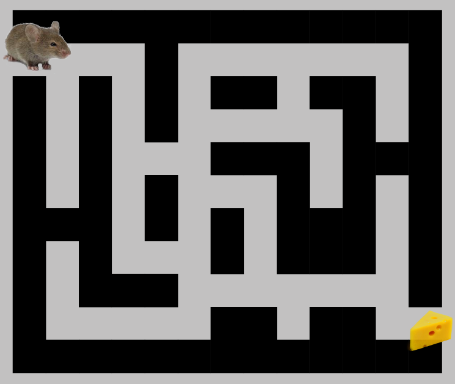

O que é backtracking?
Backtracking trata-se de uma estratégia elegante de se realizar buscas por força bruta, com o objetivo de solucionar problemas com um numero reduzido de amostras. Esse número de amostras é preciso ser pequeno, pois o backtracking gera todas as possíveis soluções do problema.
Como se comporta a complexidade temporal desse problema?
A complexidade desse problema pode variar bastante de acordo com o problema, por exemplo, imagine um lista com N elementos distintos e o problema pede que você mostre todas as possíveis permutações desses elementos, então o programa irá gerar N! elementos, tornando a complexidade do algoritmo em O(N!).
Imagine agora o Σ = {0,1} e a partir desse conjunto pede-se para gerar todos os números binários de tamanho N, então o algoritmo irá ter complexidade O(2^n).
Pincípio de funcionamento
O processo chave do backtracking é a recursão, pois a partir dela é possível avançar e retroceder ao final de cada recursão. Então, dado um conjunto de N elementos, a cada n-th utilizado na possível solução, ele é retirado dessa lista e por recursão continua-se o algoritmo, até que o conjunto fique vazio.
A imagem acima mostra o processo de recursão através de uma árvore, onde o conjunto se torna vazio quando não existe mais nós para se percorrer, pois nesse ponto é verificado se o estado atual é uma solução válida, entao a recursão desse momento é finalizada e continua-se por um caminho alternativo a partir do ponto anterior.
Observações
- Geralmente os problemas tem características combinatórias.
- Nem sempre é necessário analisar todas as possíveis soluções, pois é possível realizar podas na árvore de soluções, caso o estado atual não leve a uma solução desejada.
Pseudocódigo
Pegue um ponto inicial.
while(Problema não está resolvido)
Para cada caminho a partir do ponto inicial.
Verifica se o caminho selecionado é seguro, se sim,
seleciona-o e faz uma chamada recursiva para o resto do problema
Se a recursão retornar true, então
retorne true.
Se não,
desfaça o movimento atual e retorne falso.
Fim para
Se nenhum dos movimentos funcionar, então retorne false, SEM SOLUÇÃO.
}Aplicações
Caixeiro Viajante
Quando deseja-se encontrar a menor rota para percorrer todas as cidades, passando apenas uma vez por cada cidade.
Passeio do Cavalo
Dado uma posição inicial de um cavalo em um tabuleiro de xadrez, deseja-se saber o maior caminho possível do cavalo pelo tabuleiro, de modo que ele respeite o seu tipo de movimentação e que passe apenas 1 vez em cada posição.
Problema das N-Rainhas
Dado uma tabuleiro de xadrez, de quais formas é possível posicionar N rainhas no tabuleiro sem que se acertem, já que a rainha no xadrez pode se mover na horizontal, vertical e diagonal.
Permutações de somas
Dado um conjunto de números, quer saber-se de que formas é possível somar esses números para resultar em outro N definido.
Labirinto
Um tabuleiro quadrado ou retangular, dado dois pontos, inicial e final, deseja-se saber se é possível sair do ponto inicial e chegar no ponto final, seguindo as regras estabelecidas no problema.